Brand
Approved visual identity
The official ORYX logo and the approved design references, exactly as committed. Nothing here is redrawn or invented; the product uses the same files.
 Official ORYX logo —
Official ORYX logo — docs/assets/logo.png.jpegReferences and brand captures
22 assets
 docs/assets/ORYX Arabic Auto Services Homepage.png
docs/assets/ORYX Arabic Auto Services Homepage.png docs/assets/ORYX Auto Services Dashboard.pngdocs/assets/logo.png.jpeg
docs/assets/ORYX Auto Services Dashboard.pngdocs/assets/logo.png.jpeg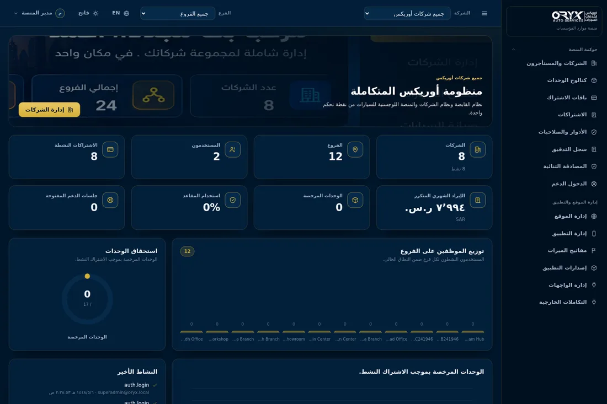
docs/audit/branding/after-dashboard-ar-dark.png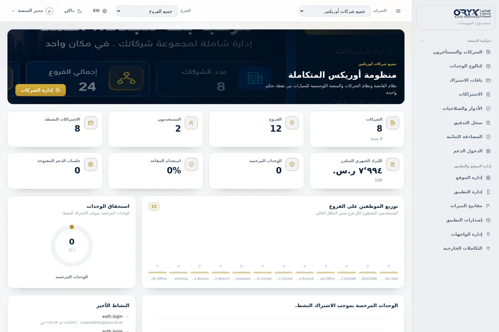
docs/audit/branding/after-dashboard-ar-light.pngdocs/audit/branding/after-dashboard-en-dark.png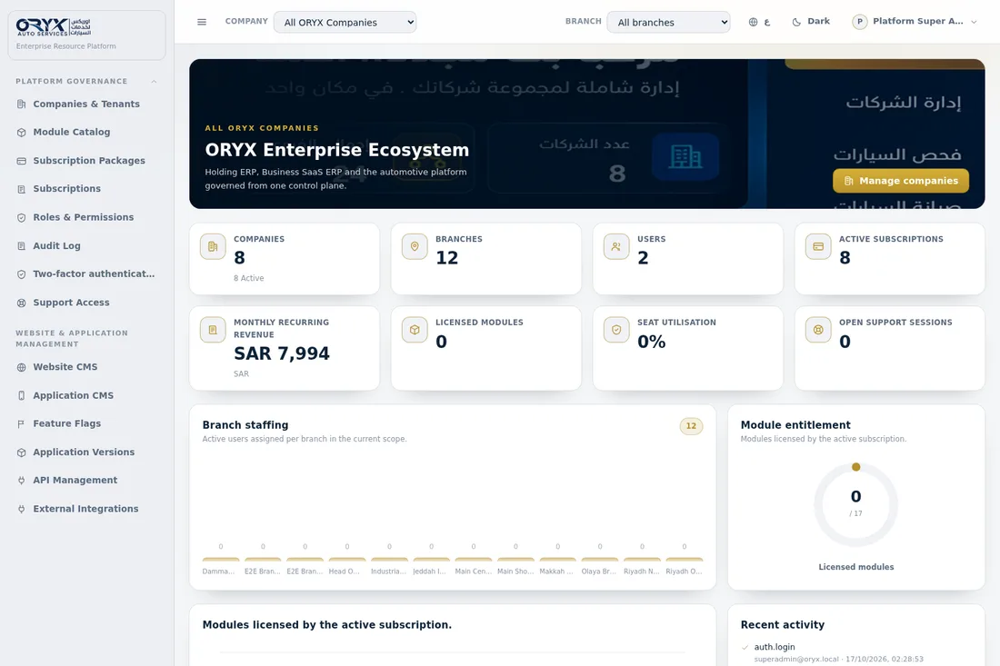
docs/audit/branding/after-dashboard-en-light.png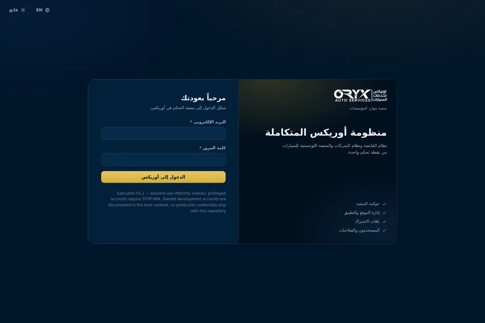
docs/audit/branding/after-login-ar-dark.png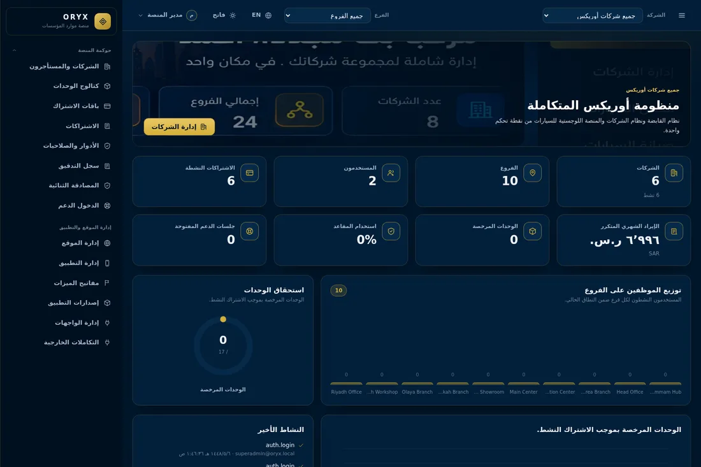
docs/audit/branding/before-dashboard-ar-dark.png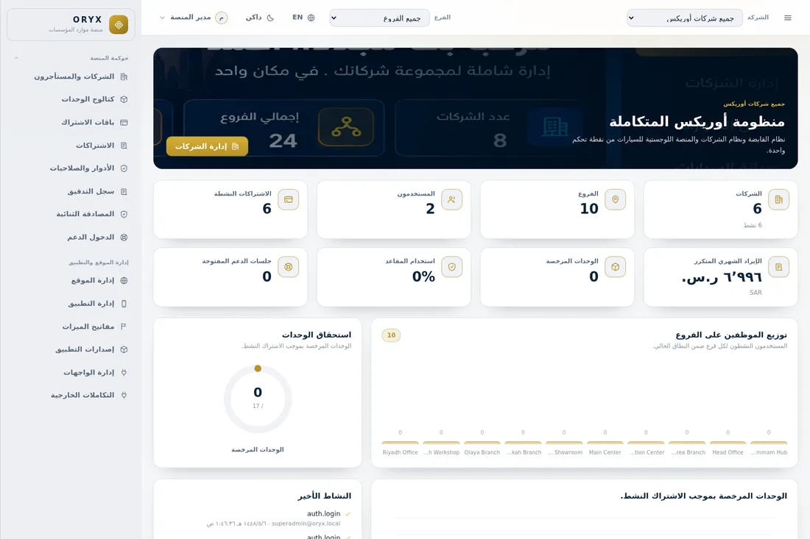
docs/audit/branding/before-dashboard-ar-light.png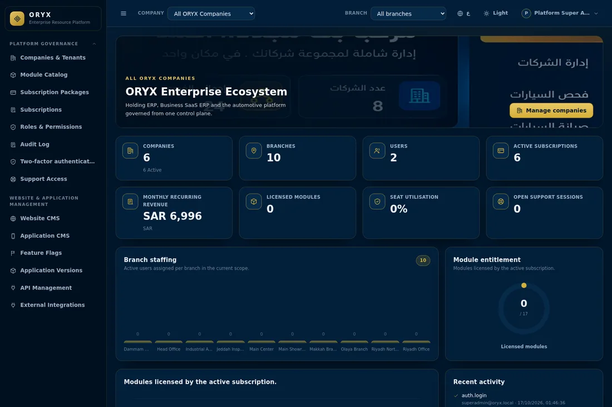
docs/audit/branding/before-dashboard-en-dark.pngdocs/audit/branding/before-dashboard-en-light.png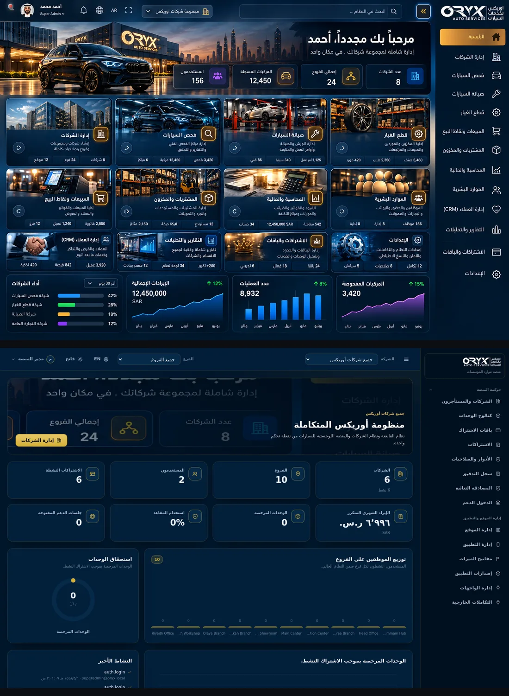
docs/audit/branding/compare-dark-ar.png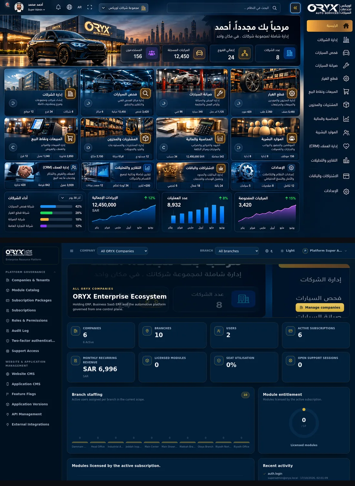
docs/audit/branding/compare-dark-en.png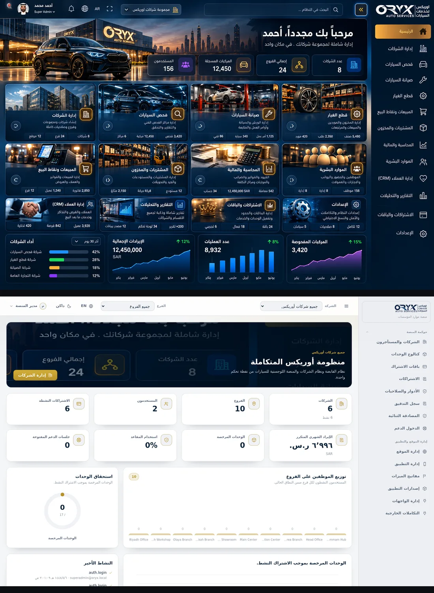
docs/audit/branding/compare-light-ar.png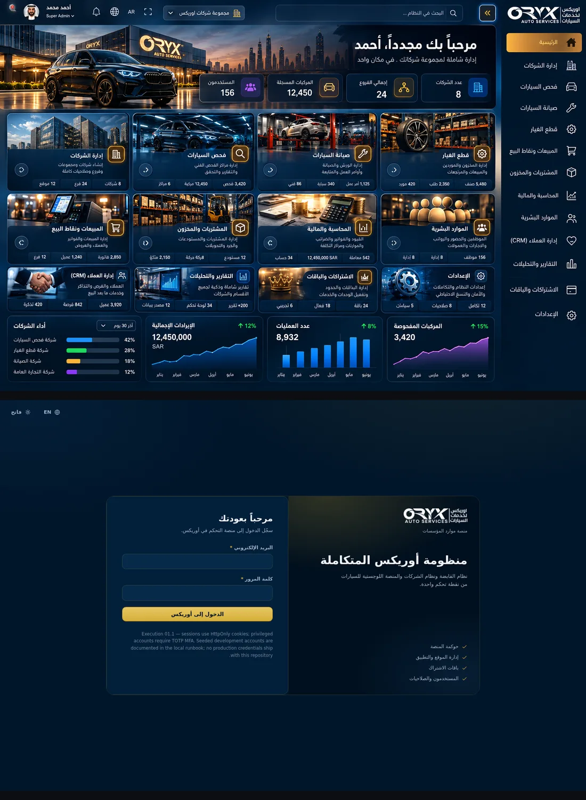
docs/audit/branding/compare-login.pngdocs/audit/branding/logo-content.pngdocs/audit/branding/logo-dark-preview.pngdocs/audit/branding/logo-left.pngdocs/audit/branding/logo-light-preview.pngdocs/audit/branding/logo-right.png docs/audit/branding/logo-source.jpg
docs/audit/branding/logo-source.jpg